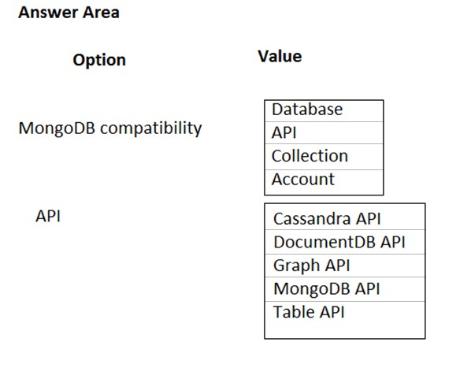
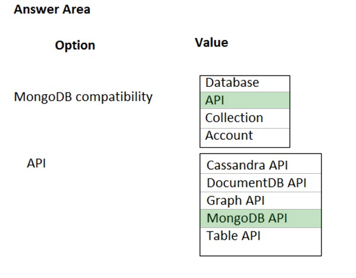

Note: This question is part of series of questions that present the same scenario. Each question in the series contains a unique solution that might meet the stated goals. Some question sets might have more than one correct solution, while others might not have a correct solution.
After you answer a question in this section, you will NOT be able to return to it. As a result, these questions will not appear in the review screen.
A company has custom ASP.NET and Java applications that run old versions of Windows and Linux. The company plans to place applications in containers.
You need to design a solution that includes networking, service discovery, and load balancing for the applications. The solution must support storage orchestration.
Solution: You create an Azure virtual network, public IP address, and load balancer. Then add virtual machines (VMs) to the solution and deploy individual containers on them.
Does the solution meet the goal?
Correct Answer:
B
Instead you should deploy each application to an Azure Container instance.
Note: Docker Containers are the global standard and are natively supported in Azure, offering enterprises an interesting and flexible way to migrate legacy apps for both future proofing and cost benefits.
References:
https://docs.microsoft.com/en-us/dotnet/standard/modernize-with-azure-and-containers/modernize-existing-apps-to-cloud-optimized/deploy-existing-net-apps-as- windows-containers
Note: This question is part of series of questions that present the same scenario. Each question in the series contains a unique solution that might meet the stated goals. Some question sets might have more than one correct solution, while others might not have a correct solution.
After you answer a question in this section, you will NOT be able to return to it. As a result, these questions will not appear in the review screen.
A company has custom ASP.NET and Java applications that run old versions of Windows and Linux. The company plans to place applications in containers.
You need to design a solution that includes networking, service discovery, and load balancing for the applications. The solution must support storage orchestration.
Solution: Deploy a Kubernetes cluster that has the desired number of instances of the applications.
Does the solution meet the goal?
Correct Answer:
B
Instead you should deploy each application to an Azure Container instance.
Note: Docker Containers are the global standard and are natively supported in Azure, offering enterprises an interesting and flexible way to migrate legacy apps for both future proofing and cost benefits.
References:
https://docs.microsoft.com/en-us/dotnet/standard/modernize-with-azure-and-containers/modernize-existing-apps-to-cloud-optimized/deploy-existing-net-apps-as- windows-containers
Note: This question is part of series of questions that present the same scenario. Each question in the series contains a unique solution that might meet the stated goals. Some question sets might have more than one correct solution, while others might not have a correct solution.
After you answer a question in this section, you will NOT be able to return to it. As a result, these questions will not appear in the review screen.
A company has custom ASP.NET and Java applications that run old versions of Windows and Linux. The company plans to place applications in containers.
You need to design a solution that includes networking, service discovery, and load balancing for the applications. The solution must support storage orchestration.
Solution: You deploy each application to an Azure Container instance.
Does the solution meet the goal?
Correct Answer:
A
Docker Containers are the global standard and are natively supported in Azure, offering enterprises an interesting and flexible way to migrate legacy apps for both future proofing and cost benefits.
Containers are modular and portable. Docker containers are supported on any server operating system (Linux and Windows), in any major public cloud (Microsoft
Azure, Amazon AWS, Google, IBM), and in on-premises and private or hybrid cloud environments.
References:
https://docs.microsoft.com/en-us/dotnet/standard/modernize-with-azure-and-containers/modernize-existing-apps-to-cloud-optimized/deploy-existing-net-apps-as- windows-containers
HOTSPOT -
You have a web application that uses a MongoDB database. You plan to migrate the web application to Azure.
You must migrate to Cosmos DB while minimizing code and configuration changes.
You need to design the Cosmos DB configuration.
What should you recommend? To answer, select the appropriate values in the answer area.
NOTE: Each correct selection is worth one point.
Hot Area:

Correct Answer:

MongoDB compatibility: API -
API: MongoDB API -
Azure Cosmos DB comes with multiple APIs:
✑ SQL API, a JSON document database service that supports SQL queries. This is compatible with the former Azure DocumentDB.
✑ MongoDB API, compatible with existing Mongo DB libraries, drivers, tools and applications.
✑ Cassandra API, compatible with existing Apache Cassandra libraries, drivers, tools, and applications.
✑ Azure Table API, a key-value database service compatible with existing Azure Table Storage.
✑ Gremlin (graph) API, a graph database service supporting Apache Tinkerpop's graph traversal language, Gremlin.
References:
https://docs.microsoft.com/en-us/azure/cosmos-db/create-mongodb-dotnet
You manage an application instance. The application consumes data from multiple databases. Application code references database tables using a combination of the server, database, and table name.
You need to migrate the application instance to Azure.
What are two possible ways to achieve this goal? Each correct answer presents a complete solution.
NOTE: Each correct selection is worth one point.
Correct Answer:
AD
A: Access your SQL Server data seamlessly regardless of whether it's on-premises or stretched to the cloud. You set the policy that determines where data is stored, and SQL Server handles the data movement in the background. The entire table is always online and queryable. And, Stretch Database doesn't require any changes to existing queries or applications - the location of the data is completely transparent to the application.
D: The managed instance deployment model is designed for customers looking to migrate a large number of apps from on-premises or IaaS, self-built, or ISV provided environment to fully managed PaaS cloud environment, with as low migration effort as possible. Using the fully automated Data Migration Service (DMS) in Azure, customers can lift and shift their on-premises SQL Server to a managed instance that offers compatibility with SQL Server on-premises and complete isolation of customer instances with native VNet support.
References:
https://docs.microsoft.com/en-us/sql/sql-server/stretch-database/stretch-database https://docs.microsoft.com/en-us/azure/sql-database/sql-database-managed-instance